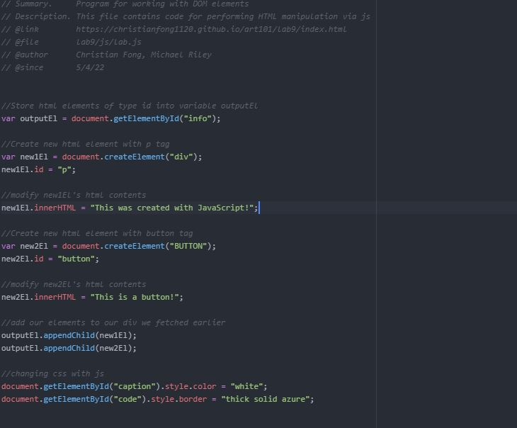

Challenge
This lab involved manipulating DOM elements with JavaScript.
Problems
This lab presented us with no problems as Christian has prior programming experience. This was very synonymous with past object oriented programming he has done in the past.
Results
We ran into 0 issues with this lab and created the javascript file with little difficulty. We successfully manipulated and fetched elements using JavaScript.
Tour of code
We first started by fetching an html element by the tag "info", which is the div detailing out efforts. We then created basic elements of "p" tag and of "button" tag. We then edited their inner html, changing their text content. From there we appended it to our fetched html element from earlier, adding it to our wbepage. After, we used js to modify css elements such as adding a border to our code screenshot, as well as changing this caption color!